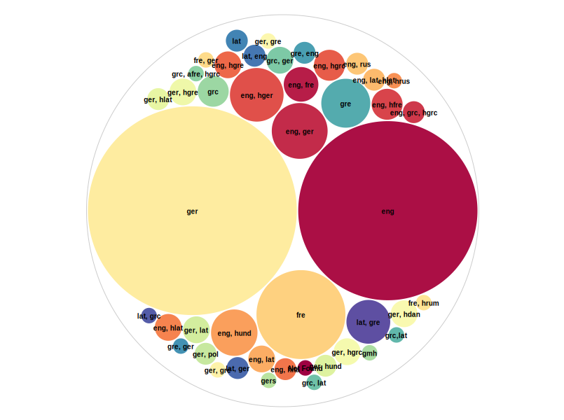

Aus dieser Aufbereitung und Auswertung geht hervor, dass der Korpus Publikationen von
insgesamt
181 unterschiedlichen Autoren beinhaltet. Untenstehender Tabelle sind die fünf am häufigsten
vertretenen Autoren in Hannah Arendts bisher digitalisierter Privatbibliothek zu entnehmen.
Es
ist evident, dass sich hier sowohl biografisch sehr zentrale Personen wie etwa Heidegger und
Jaspers, als auch für ihre Forschung als „politische Existenzialistin“[1]
essenzielle Figuren wie Kant, Hegel oder Plato finden. Da Heidegger sowohl ein persönlicher
Freund als auch eine wichtige Person vor allem in ihren Anfängen als Philosophin war, ist es
nicht verwun-derlich, dass er bei dieser Aufzählung an erster Stelle steht. Im Gegensatz
da-zu
steht der in der Tabelle an letzter Stelle auftretende Karl Jaspers, welcher im Vergleich zu
den
anderen Autoren eine deutlich geringere Anzahl an Werken aufweist. Dies ist wohl damit zu
begründen, dass Jaspers zwar biografisch von sehr großer Bedeutung für Arendt war, aber in
Bezug
auf ihre Forschung eine weniger große Rolle spielt, da er und seine Philosophie in ihrem
Werk
„kaum explizit erwähnt“ werden.[2] Daher ist das Auftreten Jaspers in dieser Aufzählung der
fünf
meist vertretenen Autoren, obgleich seiner vergleichsweise geringen Einflechtung in Arendts
Publikationen, als eine erneute Hervorhebung seiner persönlichen Bedeutung für die
Philosophin
anzusehen.
Häufigste Autoren im Korpus
Autor
Anzahl der Werke
Martin Heidegger
34
Immanuel Kant
26
Plato
26
Georg Willhelm Friedrich Hegel
21
Karl Jaspers
12
Da Hannah Arendt durch ihre Ausbildung und das spätere Exil in Frankreich und den Vereinigten
Staaten mehrerer Sprachen beherrschte, befinden sich in ihrer Privatbibliothek Werke in einer
Vielzahl verschiedener Sprachen. Untenstehend befindet sich Abbildung 1, welche die
Sprachenverteilung im Korpus in ein vergleichendes Verhältnis setzt. Je größer der mit der
Sprache oder auch den Sprachen versehene Kreis, desto häufiger sind sie vertreten. Es ist
deutlich zu erkennen, dass die meisten Publikationen ent-weder in englischer oder in deutscher
Sprache vorliegen, wobei deutschsprachige Werke etwas in der Überzahl sind. Französisch steht in
dieser Grafik klar an dritter Position. Darüber hinaus befinden sich in Arendts Handbibliothek
zahlreiche Werke, die zweisprachig herausgebracht – zum Beispiel Latein und Griechisch wurden –
oder Übersetzungen sind.

Abbildung 1: Sprachenverteilung
[1]Heuer, W./Heiter, B./Rosenmüller, S. (Hrsg.) (2011),
Arendt-Handbuch, Stuttgart, S. 248.